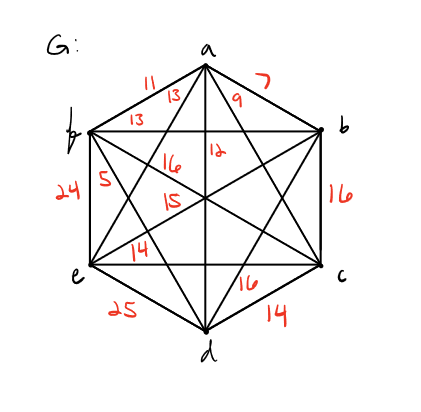

Travelling Salesman Problem
Goal
Our goal is to be able to describe the Travelling Salesman problem both mathematically and programmatically.
The Travelling Salesman problem at its root is trying to generate a minimum weight Hamiltonian cycle. This means
leaving a starting vertex and going to each other vertex, and returning to the starting vertex in a way such that
the total weight of all the edges is minimal compared to the other options for a cycle. Inorder to achieve this,
we will try to implement a number of different algorithms starting with a brute force approach. This implementation
will compare different possible cycles and then determine the minimum weight cycle. This problem can be pretty difficult
especially, as we start to implement more advanced algorithms. This is mostly due to the fact that this is still an
ongoing problem and research on optimization is still going on.
Mathematical Background and Programming Concepts
"Optimization, Minimum spanning trees, Hamiltonian paths, Complete graph."
" Big(O), 2d arrays. Algorithms (brute force - cheapest, christofides’, kruskals’, heuristic)"
What is Christofides' algorithm?

"Step 1: Construct a minimum spanning tree T of G" (Fournier, p.227)

"Step 2: Find a minimum perfect matching M in subgraph H of G induced by the vertices which are of odd degree." (Fournier, p.227)

"Step 3: Find an Euler tour D of graph U obtained by adding to T the edges of M, defined by the sequence of its vertices
written from any first vertex." (Fournier, p.227)

Step 4: ""Shorten" sequence D as in step 3 of the preceding algorithm." (Fournier, p.227)

Algorithm
Initially we tried to implement Christofides' algorithm but ran into issues creating a hamilton cycle from the overlaying
minimum spanning tree and perfect matching induced subgraph of odd vertices. We ended up modifying Christofides' algorithm by
removing the process of finding an Euler tour and creating an algorithm for the "shortening" process.
For the "shortening" process we removed duplicate edges if there are any. Then we find vertices with a degree greater than two
and remove edges with the greatest weights until the degree is two. Afterwards, we count the number of odd degree vertices
in the graph, this will show what vertices need an edge created to connect the graph. We connect the odd degree vertices to
finish the hamilton cycle.
For our second algorithm we used Kruskal's algorithm to find the minimum spanning tree. Then we found the preorder traversal
of the MST. The preorder traversal gave us the order of vertices to connect and create the hamilton cycle. For example, if the
preoder traversal was 1 2 5 3 4, then the hamilton cycle would be 1-2-5-3-4-1.
Challenges
Another issue that we ran into was time complexity! If the user enters in a list of more than four city's the server would almost
certainly time out. Some solutions that we explored was: Tweaking the Hamiltonian cycle algorithm, incorporating multithreading into
our program, and creating an async post request to allow the server more time
We would have done all three; one and two would have been the hardest. However, we lacked time to incorporate these more complex
programing patterns.
One bug we ran into when we were incorporating the Hamiltonian cycle compiled binary. Simply put, we initially complied the
hamiltonian cycle program in a Linux environment, and then we tried to run the same program in a windows environment.
Another issue was parsing the text file that we got from the webserver that stored our adjacency matrix. This involved getting
rid of any [, white space or ] in each line and then grabbing the character of each number and added it into a temp string until
we hit a comma and then convert that temp string into a number so we have the edge values.
A challenge that we faced was once we had all of the program pieces created, stitching them together to make a complete project.
This is something that we are still working on. One piece of the project was a python script that could output our hamiltonian
cycle graphicly. Since we used an express server for our backend, adding python was not easy. This involved installing python in
our local environment. The last piece to get this script working would have been data integration; we needed to tweak the file
location and the output.